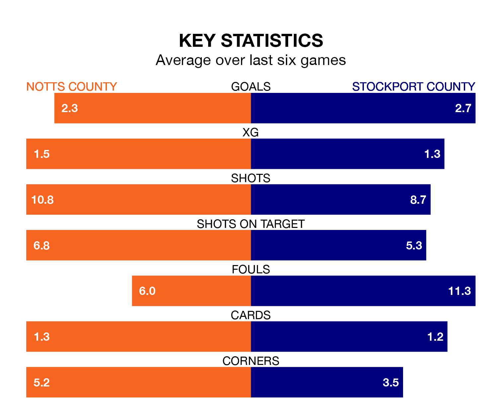

Tuesday's late match between Notts County and Stockport County promises to be one for the neutrals, as two of EFL League Two's most free-scoring sides go head-to-head.
Ahead of the game at Meadow Lane, Notts County and the Hatters sit joint-top of the goal-scoring charts, with 86 goals apiece.
Striker Macaulay Langstaff leads the way for the home side, having bagged 26 goals in their 43 games to date.
And Isaac Olaofe has been the main man in the opponents' penalty box for Stockport, with 20 goals.
Stockport are top of the table after 43 games, of which they have won 25 and drawn 11, earning 86 points.
Notts County are 14 places behind Stockport County in 15th, with 17 wins and seven draws putting them on 58 points.
The home side are in mixed form in EFL League Two, with three wins and a draw from their last six games.
With six wins and no losses over that period, the Hatters' form is much better – they have taken 18 points from 18, compared to Notts County's 10.
In Ben Hinchiffe, the visitors can rely on one of the league's safest pair of hands. He has kept 17 clean sheets in his 43 appearances this season, and no 'keeper has prevented the opposition scoring more often in EFL League Two.
In Notts County's net, Aiden Stone has four clean sheets in 23 games. He has conceded a goal every 56 minutes, 70% more often than the 97 minutes between goals for Hinchiffe.
In the last 10 years, Notts County and Stockport have played each other on seven occasions. Notts County won three of them, Stockport two, and they drew twice.
On average, Notts County scored 1.0 goal and the Hatters 1.1 in those matches.
Their last meeting was on December 22, when Stockport won 2-1 at home.
Notts County's last match was on Saturday, a 3-1 win against Walsall, with Aaron Evans Nemane, Langstaff and Samuel Joseph Austin getting the goals for Notts County.
Stockport beat Morecambe 2-0 last time out, also on Saturday, with Fraser Horsfall and Olaofe on the scoresheet.
Tuesday's match will be refereed by Alex Chilowicz, who has taken charge of nine EFL League Two games so far this season, issuing no red cards and booking 36 players. He has awarded one penalty.
The last Notts County game Chilowicz refereed was a 1-1 home draw with Barrow on January 27. His last Stockport match was their 4-0 loss away at Tranmere Rovers on February 17.
Updated: 11:31 (UTC), 15/04/24